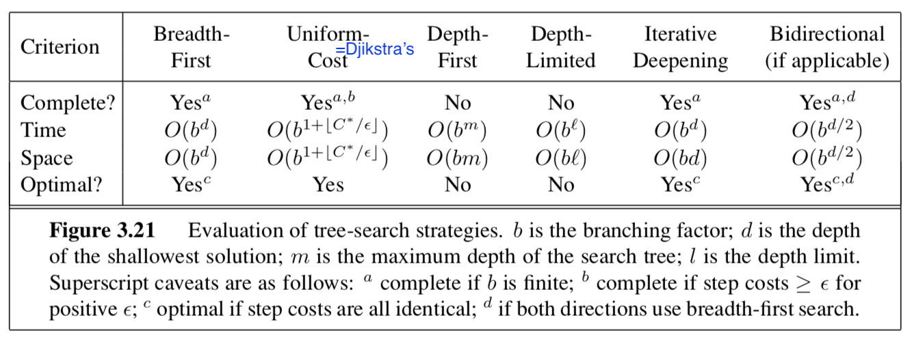

search
view markdownSome notes on search based on Berkeley’s CS 188 course and “Artificial Intelligence” Russel & Norvig 3rd Edition.
Uninformed Search - R&N 3.1-3.4
problem-solving agents
- goal - 1st step
- problem formulation - deciding what action and states to consider given a goal
- uninformed - given no info about problem besides definition
- an agent with several immediate options of unknown value can decide what to do first by examining future actions that lead to states of known value
- 5 components
- initial state
- actions at each state
- transition model
- goal states
- path cost function
problems
- toy problems
- vacuum world
- 8-puzzle (type of sliding-block puzzle)
- 8-queens problem
- Knuth conjecture
- real-world problems
- route-finding
- TSP (and othe touring problems)
- VLSI layout
- robot navigation
- automatic assembly sequencing
searching for solutions
- start at a node and make a search tree
- frontier = open list = set of all leaf nodes available for expansion at any given point
- search strategy determines which state to expand next
- want to avoid redundant paths
- TREE-SEARCH - continuously expand the frontier
- GRAPH-SEARCH - tree search but also keep track of previously visited states in explored set = closed set and don’t revisit
infrastructure
- node - data structure that contains parent, state, path-cost, action
- metrics
- complete - terminates in finite steps
- optimal - finds best solution
- time/space complexity
- theoretical CS: $\vert V\vert +\vert E\vert $
- b - branching factor - max number of branches of any node
- d - depth - number of steps from the root
- m - max length of any path in the search space
- search cost - just time/memory
- total cost - search cost + path cost
uninformed search = blind search

- bfs
- uniform-cost search - always expand node with lowest path cost g(n)
- frontier is priority queue ordered by g
- dfs
- backtracking search - dfs but only one successor is generated at a time; each partially expanded node remembers which succesor to generate next
- only O(m) memory instead of O(bm)
- depth-limited search
- diameter of state space - longest possible distance to goal from any start
- iterative deepening dfs - like bfs explores entire depth before moving on
- iterative lengthening search - instead of depth limit has path-cost limit
- backtracking search - dfs but only one successor is generated at a time; each partially expanded node remembers which succesor to generate next
- bidirectional search - search from start and goal and see if frontiers intersect
- just because they intersect doesn’t mean it was the shortest path
- can be difficult to search backward from goal (ex. N-queens)
A* Search and Heuristics - R&N 3.5-3.6
informed search
- informed search - use path costs $g(n)$ and problem-specific heuristic $h(n)$
- has evaluation function f incorporating path cost g and heuristic h
- heuristic h = estimated cost of cheapest path from state at node n to a goal state
- best-first - choose nodes with best f
- greedy best-first search - let f = h: keep expanding node closest to goal
- when f=g, reduces to uniform-cost search
- $A^*$ search
- $f(n) = g(n) + h(n)$ represents the estimated cost of the cheapest solution through n
- $A^$ (with tree search) is optimal and complete if h(n) is *admissible
- $h(n)$ never overestimates the cost to reach the goal
- $A^$ (with graph search) is optimal and complete if h(n) is *consistent (stronger than admissible) = monotonicity
- $h(n) \leq cost(n \to n’) + h(n’)$
- can draw contours of f (because nondecreasing)
- $A^$ is also *optimally efficient (guaranteed to expand fewest nodes) for any given consisten heuristic because any algorithm that that expands fewer nodes runs the risk of missing the optimal solution
- for a heuristic, absolute error $\delta := h^-h$ and *relative error $\epsilon := \delta / h^*$
- here $h^*$ is actual cost of root to goal
- bad when lots of solutions with small absolute error because it must try them all
- bad because it must store all nodes in memory
- for a heuristic, absolute error $\delta := h^-h$ and *relative error $\epsilon := \delta / h^*$
- memory-bounded heuristic search
- iterative-deepening $A^*$ - iterative deepening with cutoff f-cost
- recursive best-first search - like standard best-first search but with linear space
- each node keeps f_limit variable which is best alternative path available from any ancestor
- as it unwinds, each node is replaced with backed-up value - best f-value of its children
- decides whether it’s worth reexpanding subtree later
- often flips between different good paths (h is usually less optimistic for nodes close to the goal)
- $SMA^$ - simplified memory-bounded A - best-first until memory is full then forgot worst leaf node and add new leaf
- store forgotten leaf node info in its parent
- on hard problems, too much time switching between nodes
- agents can also learn to search with metalevel learning
heuristic functions
- effective branching factor $b^$ - if total nodes generated by A is N and solution depth is d, then b* is branching factor for uniform tree of depth d for N+1 nodes: \(N+1 = 1+b^* +(b^*)^2 + ... + (b^*)^d\)
- want $b^*$ close to 1
- generally want bigger heuristic because everything with $f(n) < C^*$ will be expanded
- $h_1$ dominates $h_2$ if $h_1(n) \geq h_2(n) : \forall : n$
- relaxed problem - removes constraints and adds edges to the graph
- solution to original problem still solves relaxed problem
- cost of optimal solution to a relaxed problem is an admissible heuristic for the original problem
- also is consistent
- when there are several good heuristics, pick $h(n) = \max[h_1(n), …, h_m(n)]$ for each node
- pattern database - heuristic stores exact solution cost for every possible subproblem instance
- disjoint pattern database - break into independent possible subproblems
- can learn heuristic by solving lots of problems using useful features
- aren’t necessarily admissible / consistent
Local Search - R&N 4.1-4.2
- local search looks for solution not path ~ like optimization
- maintains only current node and its neighbors
discrete space
- hill-climbing = greedy local search
- also stochastic hill climbing and random-restart hill climbing
- simulated annealing - pick random move
- if move better, then accept
- otherwise accept with some probability p’roportional to how bad it is and accept less as time goes on
- local beam search - pick k starts, then choose the best k states from their neighbors
- stochastic beam search - pick best k with prob proportional to how good they are
- genetic algorithms - population of k individuals
- each scored by fitness function
- pairs are selected for reproduction using crossover point
- each location subject to random mutation
- schema - substring in which some of the positions can be left unspecified (ex. $246**$)
- want schema to be good representation because chunks tend to be passed on together
continuous space
- hill-climbing / simulated annealing still work
- could just discretize neighborhood of each state
- use gradient
- if possible, solve $\nabla f = 0$
- otherwise SGD $x = x + \alpha \nabla f(x)$
- can estimate gradient by evaluating response to small increments
- line search - repeatedly double $\alpha$ until f starts to increase again
- Newton-Raphson method
- finds roots of func using 1st derive: $x_\text{root} = x - g(x) / g’(x)$
- apply this on 1st deriv to get minimum
- $x = x - H_f^{-1} (x) \nabla f(x)$ where H is the Hessian of 2nd derivs
Constraint satisfaction problems - R&N 6.1-6.5
- CSP
- set of variables $X_1, …, X_n$
- set of domains $D_1, …, D_n$
- set of constraints $C$ specifying allowable values
- each state is an assignment of variables
- consistent - doesn’t violate constraints
- complete - every variable is assigned
- constraint graph - nodes are variables and links connect any 2 variables that participate in a constraint
- unary constraint - restricts value of single variable
- binary constraint
- global constraint - arbitrary number of variables (doesn’t have to be all)
- converting graphs to only binary constraints
- every finite-domain constraint can be reduced to set of binary constraints w/ enough auxiliary variables
- dual graph transformation - create a new graph with one variable for each constraint in the original graph and one binary constraint for each pair of original constraints that share variables
- also can have preference constraints instead of absolute constraints
inference (prunes search space before backtracking)
- node consistency - prune domains violating unary constraints
- arc consistency - satisfy binary constraints (every node is made arc-consistent with all other nodes)
- uses AC-3 algorithm
- set of all arcs = binary constraints
- pick one and apply it
- if things changed, re-add all the neighboring arcs to the set
- $O(cd^3)$ where $d = \vert domain\vert $, c = # arcs
- variable can be generalized arc consistent
- uses AC-3 algorithm
- path consistency - consider constraints on triplets - PC-2 algorithm
- extends to k-consistency (although path consistency assumes binary constraint networks)
- strongly k-consistent - also (k-1) consistent, (k-2) consistent, … 1-consistent
- implies $O(k^2d)$
- establishing k-consistency time/space is exponential in k
- global constraints can have more efficient algorithms
- ex. assign different colors to everything
- resource constraint = atmost constraint - sum of variable must not exceed some limit
- bounds propagation - make sure variables can be allotted to solve resource constraint
backtracking
- CSPs are commutative - order of choosing states doesn’t matter
- backtracking search - depth-first search that chooses values for one variable at a time and backtracks when no legal values left
- variable and value ordering
- minimum-remaining-values heuristic - assign variable with fewest choices
- degree heuristic - pick variable involved in largest number of constraints on other unassigned variables
- least-constraining-value heuristic - prefers value that rules out fewest choices for nieghboring variables
- interleaving search and inference
- forward checking - when we assign a variable in search, check arc-consistency on its neighbors
- maintaining arc consistency (MAC) - when we assign a variable, call AC-3, intializing with arcs to neighbors
- intelligent backtracking - looking backward
- keep track of conflict set for each node (list of variable assignments that deleted things from its domain)
- backjumping - backtracks to most recent assignment in conflict set
- too simple - forward checking makes this redundant - conflict-directed backjumping
- let $X_j$ be current variable and $conf(X_j)$ be conflict set. If every possible value for $X_j$ fails, backjump to the most recent variable $X_i$ in $conf(X_j)$ and set $conf(X_i) = conf(X_i) \cup conf(X_j) - X_i$ - constraint learning - findining minimum set of variables/values from conflict set that causes the problem = no-good
- variable and value ordering
local search for csps
- start with some assignment to variables
- min-conflicts heuristic - change variable to minimize conflicts
- can escape plateaus with tabu search - keep small list of visited states
- could use constraint weighting
structure of problems
- connected components of constraint graph are independent subproblems
- tree - any 2 variables are connected by only one path
- directed arc consistency - ordered variables $X_i$, every $X_i$ is consistent with each $X_j$ for j>i
- tree with n nodes can be made directed arc-consisten in $O(n)$ steps - $O(nd^2)$
- directed arc consistency - ordered variables $X_i$, every $X_i$ is consistent with each $X_j$ for j>i
- two ways to reduce constraint graphs to trees
- assign variables so remaining variables form a tree
- assigned variables called cycle cutset with size c
- $O[d^c \cdot (n-c) d^2]$
- finding smallest cutset is hard, but can use approximation called cutset conditioning
- tree decomposition - view each subproblem as a mega-variable
- tree width w - size of largest subproblem - 1
- solvable in $O(n d^{w+1})$
- assign variables so remaining variables form a tree
- also can look at structure in variable values
- ex. value symmetry - can assign different colorings
- use symmetry-breaking constraint - assign colors in alphabetical order
- ex. value symmetry - can assign different colorings